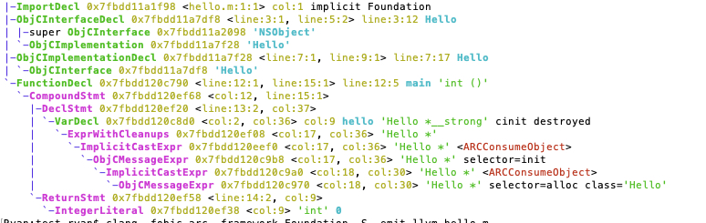

我们都知道ARC是苹果通过编译器在编译期支持的功能。但要问编译器对ARC是怎么支持的，很多人大概率说不出所以然来。
Objective-C的内存管理依靠引用计数，在对象被持有时增加计数，在对象被原持有对象释放的时候减少计数。在ARC之前，开发者是需要牢记retain跟release的。
我们来看一个示例程序：
1 | @interface Hello : NSObject |
我们通过Clang前端来检查编译各阶段的情况。
clang -fobjc-arc -framework Foundation -fmodules -fsyntax-only -Xclang -ast-dump hello.m
输出AST：

在输出的AST中我们能找到与ARC相关的内容非常少，也没有看到插入objc_storeStrong等符号。唯一相关的是ARCConsumeObject。
clang -fobjc-arc -framework Foundation -S -emit-llvm hello.m
生成IR代码：1
2
3
4
5
6
7
8
9
10
11
12
13
14
15define i32 @main() #0 {
%1 = alloca i32, align 4
%2 = alloca %0*, align 8
store i32 0, i32* %1, align 4
%3 = load %struct._class_t*, %struct._class_t** @"OBJC_CLASSLIST_REFERENCES_$_", align 8
%4 = bitcast %struct._class_t* %3 to i8*
%5 = call i8* @objc_alloc_init(i8* %4)
%6 = bitcast i8* %5 to %0*
store %0* %6, %0** %2, align 8
store i32 0, i32* %1, align 4
%7 = bitcast %0** %2 to i8**
call void @llvm.objc.storeStrong(i8** %7, i8* null) #1
%8 = load i32, i32* %1, align 4
ret i32 %8
}
clang -fobjc-arc -framework Foundation -S hello.ll -o hello.s
生成汇编：1
2
3
4
5
6
7
8
9
10
11
12
13
14
15
16
17
18
19
20
21
22
23
24
25
26
27
28
29
30
31
32
33
34
35
36
37
38
39
40
41
42
43
44
45
46
47
48
49
50
51
52
53
54
55
56
57
58
59
60
61
62
63
64
65
66
67
68
69
70
71
72
73
74
75
76
77
78
79
80
81
82
83
84
85
86
87
88
89
90
91
92
93
94
95
96
97
98 .section __TEXT,__text,regular,pure_instructions
.build_version macos, 11, 0 sdk_version 12, 1
.globl _main ## -- Begin function main
.p2align 4, 0x90
_main: ## @main
.cfi_startproc
## %bb.0:
pushq %rbp
.cfi_def_cfa_offset 16
.cfi_offset %rbp, -16
movq %rsp, %rbp
.cfi_def_cfa_register %rbp
subq $16, %rsp
movl $0, -4(%rbp)
movq _OBJC_CLASSLIST_REFERENCES_$_(%rip), %rdi
callq _objc_alloc_init
xorl %ecx, %ecx
movl %ecx, %esi
movq %rax, -16(%rbp)
movl $0, -4(%rbp)
leaq -16(%rbp), %rdi
callq _objc_storeStrong
movl -4(%rbp), %eax
addq $16, %rsp
popq %rbp
retq
.cfi_endproc
## -- End function
.section __TEXT,__objc_classname,cstring_literals
L_OBJC_CLASS_NAME_: ## @OBJC_CLASS_NAME_
.asciz "Hello"
.section __DATA,__objc_const
.p2align 3 ## @"_OBJC_METACLASS_RO_$_Hello"
__OBJC_METACLASS_RO_$_Hello:
.long 129 ## 0x81
.long 40 ## 0x28
.long 40 ## 0x28
.space 4
.quad 0
.quad L_OBJC_CLASS_NAME_
.quad 0
.quad 0
.quad 0
.quad 0
.quad 0
.section __DATA,__objc_data
.globl _OBJC_METACLASS_$_Hello ## @"OBJC_METACLASS_$_Hello"
.p2align 3
_OBJC_METACLASS_$_Hello:
.quad _OBJC_METACLASS_$_NSObject
.quad _OBJC_METACLASS_$_NSObject
.quad __objc_empty_cache
.quad 0
.quad __OBJC_METACLASS_RO_$_Hello
.section __DATA,__objc_const
.p2align 3 ## @"_OBJC_CLASS_RO_$_Hello"
__OBJC_CLASS_RO_$_Hello:
.long 128 ## 0x80
.long 8 ## 0x8
.long 8 ## 0x8
.space 4
.quad 0
.quad L_OBJC_CLASS_NAME_
.quad 0
.quad 0
.quad 0
.quad 0
.quad 0
.section __DATA,__objc_data
.globl _OBJC_CLASS_$_Hello ## @"OBJC_CLASS_$_Hello"
.p2align 3
_OBJC_CLASS_$_Hello:
.quad _OBJC_METACLASS_$_Hello
.quad _OBJC_CLASS_$_NSObject
.quad __objc_empty_cache
.quad 0
.quad __OBJC_CLASS_RO_$_Hello
.section __DATA,__objc_classrefs,regular,no_dead_strip
.p2align 3 ## @"OBJC_CLASSLIST_REFERENCES_$_"
_OBJC_CLASSLIST_REFERENCES_$_:
.quad _OBJC_CLASS_$_Hello
.section __DATA,__objc_classlist,regular,no_dead_strip
.p2align 3 ## @"OBJC_LABEL_CLASS_$"
l_OBJC_LABEL_CLASS_$:
.quad _OBJC_CLASS_$_Hello
.section __DATA,__objc_imageinfo,regular,no_dead_strip
L_OBJC_IMAGE_INFO:
.long 0
.long 64
.subsections_via_symbols
我们可以看到在AST阶段其实编译器并没有插入ARC相关代码，但在IR阶段便插入了`@llvm.objc.storeStrong（即汇编的_objc_storeStrong）。所以唯一的线索是ARCConsumeObject`。
顺着这条线索，我们查阅到了：
llvm-project/clang/lib/Sema/SemaExprObjC.cpp 中的Sema::CheckObjCConversion。
正是ARC处理之处。我直接把这部分代码贴在下面：
1 | Sema::ARCConversionResult |
总结一句话就是说，ARC是编译器在AST之后、生成IR中间代码之前插入的代码。
Comments